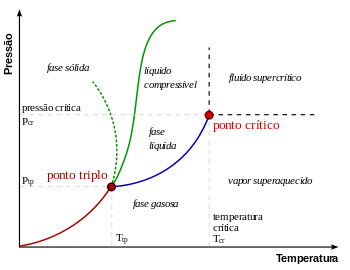

Lei Zero da Termodinâmica
O que é a escala Kelvin
Também chamada de escala absoluta a escala kelvin é a utilizada de forma mais ampla pela ciências, pelo fato de não possuir valores infinitos, sejam eles positivos e negativos.
Como podemos definir a escala kelvin?
Uma forma de definir a escala kelvin é pegarmos o ponto triplo da água, ponto em que as três fases, sólido, líquido e gasoso, da água se encontram mutuamente. Na escala kelvin este ponto se dá em 273,16 k o equivalente a 0,01°C. NOTE que na escala kelvin não utilizamos a notação de grau!!! 
Qual é o valor de 0 k, também chamado 0 absoluto
Se o ponto triplo da água se dá em 273,16 k, e por se tratar de uma escala absoluta sem valores negatigos, podemos dizer que o 0 k é equivalente a -273,15°C. MAS a título de estudos usaremos o valor de -273°C.
Em um dia quando a temperatura alcança 50°F, qual sua temperatura em graus celsius e kelvins?
10°C e 283K
O ouro tem um ponto de fusão de 1064°C e um ponto de ebulição de 2660°C.(a)Expresse essas temperaturas em kelvin.(b)Calcule a diferença entre essas temperaturas em graus celsius e kelvins.
(a) 1337K; 2933K
(b)1596°C; 1596K